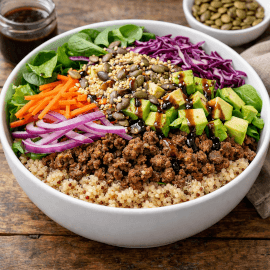
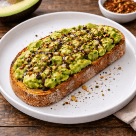
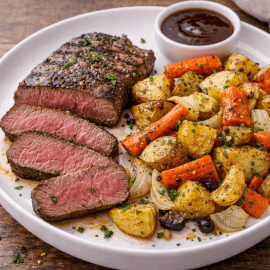
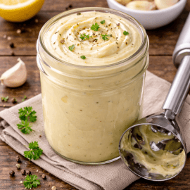
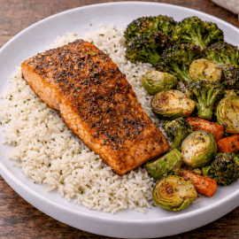
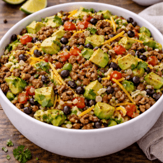

Welcome!
This is a simple, no-nonsense website to find and share recipes without the fluff.
Newest Recipes
Quinoa Salad Bowl

Whole foodsScrambled Eggs & Potatoes
Feel good
Avocado Toast

Quick & easySteak & Root Veggies Test Long Title Test Long Title Test Long Title

Hearty mealGarlic Aioli

Cost savingSalmon & Green Veggies

HealthyBurrito Bowl

Latin influenceBreakfast Burrito
On the go